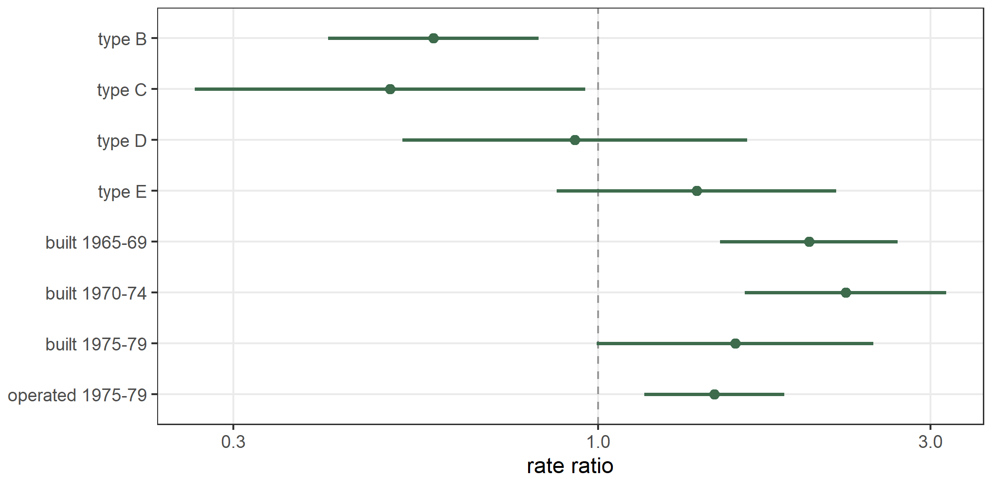
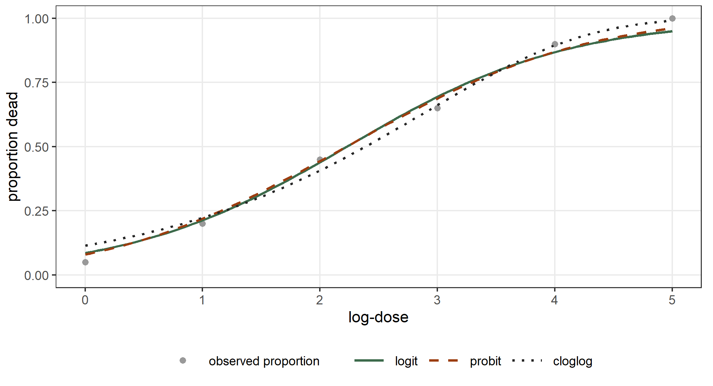
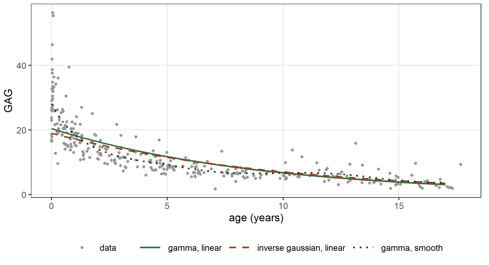
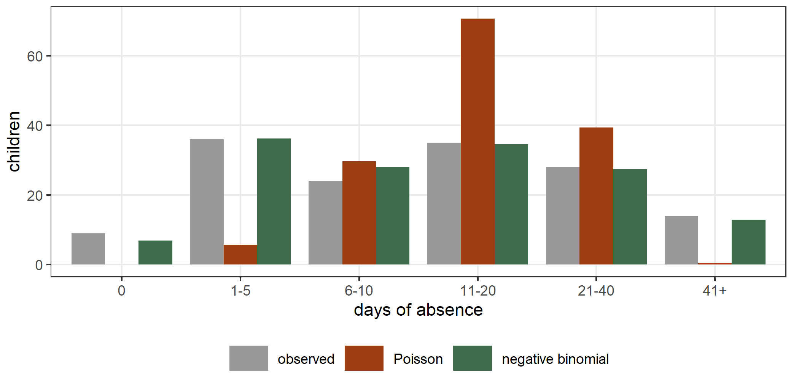

data(ships, package = "MASS")
ships <- subset(ships, service > 0)
ships$year <- factor(ships$year)
ships$period <- factor(ships$period)
head(ships, n = 4)
#> type year period service incidents
#> 1 A 60 60 127 0
#> 2 A 60 75 63 0
#> 3 A 65 60 1095 3
#> 4 A 65 75 1095 44 Generalized linear models
A generalized linear model has a response with a distribution from the exponential family, a mean that is a function of a linear predictor, and a variance that is a function of the mean. The function glm() fits these models, and statmod() fits them too, for these and for other distributions. This chapter takes the usual cases one by one: counts, proportions and binary responses, positive measurements, and counts that vary more than the Poisson distribution allows. For each case we fit the model with statmod() and compare the result with glm() or, for the negative binomial distribution, with MASS::glm.nb(). Two differences appear in every comparison, and we state them here once.
Not every model of the chapter is a generalized linear model in the strict sense. The Poisson, binomial, Bernoulli, gamma and inverse gaussian distributions belong to the exponential family, and with them statmod() fits the models of glm(). The negative binomial distribution belongs to the family only when \(\theta\) is known, and glm.nb() treats it as a generalized linear model with \(\theta\) estimated in an outer loop. The distributions negbin1_distrib(), pig1_distrib(), pig2_distrib() and betabinom1_distrib() are not in the exponential family for any value of their dispersion, and a model with an equation for the dispersion, as in Section 4.5, is an extension of the generalized linear model as well. We keep these models in this chapter because they answer the same question, the variance of counts and proportions, and because they use the same formulas and the same link functions. The text says each time when a model goes beyond glm().
First, some distributions have a second parameter, the dispersion. glm() estimates it by a moment estimator, dividing the Pearson statistic by the residual degrees of freedom. statmod() estimates it as a parameter of the distribution, by maximizing a criterion, and the estimate is a little different. Second, statmod() evaluates the log-likelihood at its own estimates, so the log-likelihood and the AIC that it reports can differ from those of glm(). When the distribution has no dispersion, as the Poisson and the binomial distributions, the two functions give the same numbers.
4.1 Counts and rates
The data frame ships from the MASS package records damage incidents to cargo ships (McCullagh and Nelder 1989). Each row is one combination of three factors: the type of the ship, from A to E, the period of construction and the period of operation. The response incidents is the number of damage incidents in the row, and service is the number of months of service of the ships in the row.
We keep the 34 rows with some months of service. When the factors are the same, a row with twice the months of service has on average twice as many incidents. So we model the rate of incidents per month of service. Let \(y_i\) be the number of incidents in row \(i\) and \(t_i\) its months of service. The model is \[
y_i \sim \mathrm{Poisson}(\mu_i), \qquad
\log \mu_i = \log t_i + x_i^\top \beta ,
\] where \(x_i\) holds the intercept and the indicators of the three factors. The term \(\log t_i\) has a coefficient fixed at one, and it is called an offset. It turns the model for the mean count \(\mu_i\) into a model for the rate \(\mu_i / t_i\). We wrote an offset in Section 2.9, and here we use it as in glm():
fit_ships <- statmod(incidents ~ type + year + period + offset(log(service)),
distrib = poisson_distrib(), data = ships)
glm_ships <- glm(incidents ~ type + year + period + offset(log(service)),
family = poisson, data = ships)
summary(fit_ships)
#> A statmod fit
#>
#> Call: statmod(formula = incidents ~ type + year + period + offset(log(service)),
#> distrib = poisson_distrib(), data = ships)
#>
#> Distribution: poisson Observations: 34
#>
#> === mu [log link]
#>
#> Parametric terms
#> estimate se z p lower upper
#> (Intercept) -6.406 0.2174 -29.46 < 1e-16 -6.832 -5.98
#> typeB -0.5433 0.1776 -3.06 0.002217 -0.8914 -0.1953
#> typeC -0.6874 0.329 -2.089 0.036702 -1.332 -0.04248
#> typeD -0.07596 0.2906 -0.2614 0.793773 -0.6455 0.4936
#> typeE 0.3256 0.2359 1.38 0.167501 -0.1367 0.7879
#> year65 0.6971 0.1496 4.659 3.181e-06 0.4038 0.9904
#> year70 0.8184 0.1698 4.821 1.431e-06 0.4857 1.151
#> year75 0.4534 0.2332 1.945 0.051821 -0.003579 0.9104
#> period75 0.3845 0.1183 3.251 0.001151 0.1527 0.6163
#>
#> 95% intervals, bayesian variance
#> conditional log-likelihood -68.280771 effective df 9.00
#> cAIC 154.562 cBIC 168.299
#> fitted in 780 ms
#> inner max |grad|/se 3.3e-15 min eigen 0.039The distribution poisson_distrib() has one parameter, the mean mu, with the log link. The model has no dispersion, so the estimates are those of glm():
coef(fit_ships)$mu
#> (Intercept) typeB typeC typeD typeE year65
#> -6.40590156 -0.54334430 -0.68740165 -0.07596142 0.32557946 0.69714043
#> year70 year75 period75
#> 0.81842658 0.45342664 0.38446696
coef(glm_ships)
#> (Intercept) typeB typeC typeD typeE year65
#> -6.40590156 -0.54334430 -0.68740165 -0.07596142 0.32557946 0.69714043
#> year70 year75 period75
#> 0.81842658 0.45342664 0.38446696
all.equal(target = unname(vcov(glm_ships)), current = unname(vcov(fit_ships)),
tolerance = 1e-3)
#> [1] TRUE
logLik(fit_ships)
#> 'log Lik.' -68.28077 (df=9)
logLik(glm_ships)
#> 'log Lik.' -68.28077 (df=9)
AIC(fit_ships)
#> [1] 154.5615
AIC(glm_ships)
#> [1] 154.5615The coefficients, the variance matrix, the log-likelihood and the AIC agree up to the precision of the two optimizers. The \(z\) values and the p-values also agree: for a Poisson response glm() compares the Wald statistic with the standard gaussian distribution, as statmod() does.
Rate ratios
A coefficient of a log-linear model is the logarithm of a ratio of rates. Each coefficient of a factor compares one level with the first level of the factor, at equal values of the other factors. We exponentiate the estimates and the ends of the intervals of confint():
ci_ships <- confint(fit_ships)
ci_ships <- ci_ships[ci_ships$coefficient != "(Intercept)", ]
ratios <- data.frame(ratio = exp(ci_ships$estimate),
lower = exp(ci_ships$lower),
upper = exp(ci_ships$upper),
row.names = ci_ships$coefficient)
ratios
#> ratio lower upper
#> typeB 0.5808026 0.4100754 0.8226088
#> typeC 0.5028810 0.2638638 0.9584087
#> typeD 0.9268520 0.5244081 1.6381414
#> typeE 1.3848329 0.8722007 2.1987623
#> year65 2.0080025 1.4975773 2.6923978
#> year70 2.2669302 1.6252739 3.1619117
#> year75 1.5736954 0.9964273 2.4853969
#> period75 1.4688312 1.1649262 1.8520185
Type C has the smallest rate, 0.50 times the rate of type A, and type E has the largest, 1.38 times. Ships built in 1965–69 have 2.01 times the rate of ships built in 1960–64, and operation in 1975–79 multiplies the rate by 1.47.
Is the variance equal to the mean?
The Poisson distribution has variance equal to its mean. The Pearson statistic \(X^2 = \sum_i (y_i - \hat\mu_i)^2/\hat\mu_i\) compares the squared residuals with this variance. If the model is right, \(X^2\) divided by the residual degrees of freedom is close to one:
mu_ships <- predict(fit_ships, what = "mu", newdata = ships)
x2_ships <- sum((ships$incidents - mu_ships)^2 / mu_ships)
df_ships <- nrow(ships) - length(coef(fit_ships)$mu)
x2_ships
#> [1] 42.27525
df_ships
#> [1] 25
x2_ships / df_ships
#> [1] 1.69101The ratio is 1.69. A ratio above one means that the counts vary more than the Poisson distribution allows: here they vary about 1.7 times as much, and the standard errors of the Poisson model are too small by about the square root of this ratio, 1.30. The next sections use distributions with a variance that is larger than the mean, and a data set where the ratio is much larger.
4.2 Proportions and binary responses
A number of successes out of a number of trials
In a dose-response experiment a number of subjects receive a dose, and we count how many of them react. The table below is the classic experiment on the tobacco budworm (Collett 1991; Venables and Ripley 2002). Batches of 20 moths of each sex received one of six doses of a poison, and the response is the number of dead moths after three days. The dose is coded by its base-2 logarithm, ldose.
budworm <- data.frame(
ldose = rep(0:5, times = 2),
sex = factor(rep(c("M", "F"), each = 6)),
numdead = c(1, 4, 9, 13, 18, 20, 0, 2, 6, 10, 12, 16),
n = 20)
budworm
#> ldose sex numdead n
#> 1 0 M 1 20
#> 2 1 M 4 20
#> 3 2 M 9 20
#> 4 3 M 13 20
#> 5 4 M 18 20
#> 6 5 M 20 20
#> 7 0 F 0 20
#> 8 1 F 2 20
#> 9 2 F 6 20
#> 10 3 F 10 20
#> 11 4 F 12 20
#> 12 5 F 16 20Let \(y_i\) be the number of dead moths in batch \(i\), out of \(m_i = 20\). The model is \[
y_i \sim \mathrm{Binomial}(m_i, p_i), \qquad
\mathrm{logit}\,p_i = \beta_0 + \beta_1 s_i + \beta_2 d_i + \beta_3 s_i d_i ,
\] where \(s_i\) is 1 for males and \(d_i\) is the log-dose. In statmod() the parameter mu of binomial_distrib() is the probability \(p_i\). The response is the two-column matrix of successes and failures, as in glm(), and the number of trials of each row is the sum of its two entries:
fit_bw <- statmod(cbind(numdead, n - numdead) ~ sex * ldose,
distrib = binomial_distrib(), data = budworm)
glm_bw <- glm(cbind(numdead, n - numdead) ~ sex * ldose, family = binomial,
data = budworm)
summary(fit_bw)
#> A statmod fit
#>
#> Call: statmod(formula = cbind(numdead, n - numdead) ~ sex * ldose,
#> distrib = binomial_distrib(), data = budworm)
#>
#> Distribution: binomial Observations: 12
#>
#> === mu [logit link]
#>
#> Parametric terms
#> estimate se z p lower upper
#> (Intercept) -2.994 0.5527 -5.416 6.087e-08 -4.077 -1.91
#> sexM 0.175 0.7783 0.2248 0.8221 -1.35 1.7
#> ldose 0.906 0.1671 5.422 5.891e-08 0.5785 1.234
#> sexM:ldose 0.3529 0.27 1.307 0.1912 -0.1763 0.8821
#>
#> 95% intervals, bayesian variance
#> conditional log-likelihood -17.552064 effective df 4.00
#> cAIC 43.104 cBIC 45.044
#> fitted in 780 ms
#> inner max |grad|/se 2.3e-15 min eigen 0.035
coef(glm_bw)
#> (Intercept) sexM ldose sexM:ldose
#> -2.9935418 0.1749868 0.9060364 0.3529130
logLik(fit_bw)
#> 'log Lik.' -17.55206 (df=4)
logLik(glm_bw)
#> 'log Lik.' -17.55206 (df=4)The estimates agree with those of glm(). The coefficient of ldose is the increase of the log odds of death for one more unit of log-dose in the reference sex, females: 0.906. The slope of the males is larger by the coefficient of sexM:ldose, 0.353, but this interaction is not significant (its p-value is 0.19), so the data do not show a difference between the slopes of the two sexes. We drop the interaction in the next comparison, where we look at the link.
The link
The logit link is not the only link that maps a probability onto the real line. The probit link \(\Phi^{-1}(p)\) uses the quantile function of the standard gaussian distribution, and the complementary log-log link \(\log(-\log(1 - p))\) is asymmetric: it approaches 0 slowly and 1 quickly. The distribution takes the link as the argument link_mu. We fit the additive model with the three links:
fit_bw_logit <- statmod(cbind(numdead, n - numdead) ~ sex + ldose,
distrib = binomial_distrib(link_mu = logit_link()),
data = budworm)
fit_bw_probit <- statmod(cbind(numdead, n - numdead) ~ sex + ldose,
distrib = binomial_distrib(link_mu = probit_link()),
data = budworm)
fit_bw_cloglog <- statmod(cbind(numdead, n - numdead) ~ sex + ldose,
distrib = binomial_distrib(link_mu = cloglog_link()),
data = budworm)
link_table <- data.frame(
link = c("logit", "probit", "cloglog"),
logLik = c(as.numeric(logLik(fit_bw_logit)),
as.numeric(logLik(fit_bw_probit)),
as.numeric(logLik(fit_bw_cloglog))),
AIC = c(AIC(fit_bw_logit), AIC(fit_bw_probit), AIC(fit_bw_cloglog)))
link_table
#> link logLik AIC
#> 1 logit -18.43373 42.86747
#> 2 probit -17.83818 41.67636
#> 3 cloglog -18.46901 42.93802The three models have the same number of parameters, so their log-likelihoods compare directly. The probit link has the largest log-likelihood, but the differences are small: with only 12 batches the data cannot separate the links well. Figure 4.2 shows why. The three curves are close in the middle of the range of doses and differ at the ends.

A binary response
When every row is one subject, the response is 0 or 1 and the distribution is the Bernoulli distribution, which is the binomial distribution with one trial. The data frame birthwt from the MASS package has the birth weight of 189 babies, and low is 1 when the weight is below 2.5 kg (Hosmer and Lemeshow 1989). The covariates are the age and the weight of the mother at the last menstrual period, smoke for smoking during the pregnancy and ht for a history of hypertension:
data(birthwt, package = "MASS")
fit_bwt <- statmod(low ~ age + lwt + smoke + ht,
distrib = bernoulli_distrib(), data = birthwt)
glm_bwt <- glm(low ~ age + lwt + smoke + ht, family = binomial,
data = birthwt)
summary(fit_bwt)
#> A statmod fit
#>
#> Call: statmod(formula = low ~ age + lwt + smoke + ht, distrib = bernoulli_distrib(),
#> data = birthwt)
#>
#> Distribution: bernoulli Observations: 189
#>
#> === mu [logit link]
#>
#> Parametric terms
#> estimate se z p lower upper
#> (Intercept) 1.767 1.052 1.679 0.093133 -0.2955 3.829
#> age -0.03569 0.03337 -1.07 0.284801 -0.1011 0.02971
#> lwt -0.01696 0.006623 -2.56 0.010466 -0.02994 -0.003974
#> smoke 0.679 0.3319 2.046 0.040794 0.02843 1.33
#> ht 1.788 0.6859 2.607 0.009132 0.4439 3.132
#>
#> 95% intervals, bayesian variance
#> conditional log-likelihood -107.842166 effective df 5.00
#> cAIC 225.684 cBIC 241.893
#> fitted in 30 ms
#> inner max |grad|/se 2e-15 min eigen 0.016
coef(glm_bwt)
#> (Intercept) age lwt smoke ht
#> 1.76685576 -0.03568724 -0.01695511 0.67902040 1.78815623The coefficients are those of glm(). Each coefficient is a log odds ratio, so we exponentiate the estimates and the ends of the intervals:
ci_bwt <- confint(fit_bwt)
ci_bwt <- ci_bwt[ci_bwt$coefficient != "(Intercept)", ]
odds <- data.frame(odds_ratio = exp(ci_bwt$estimate),
lower = exp(ci_bwt$lower),
upper = exp(ci_bwt$upper),
row.names = ci_bwt$coefficient)
odds
#> odds_ratio lower upper
#> age 0.9649420 0.9038591 1.0301529
#> lwt 0.9831878 0.9705078 0.9960335
#> smoke 1.9719451 1.0288393 3.7795672
#> ht 5.9784194 1.5587006 22.9303170Smoking multiplies the odds of a low birth weight by 1.97, and a history of hypertension by 5.98. The intervals are Wald intervals, built on the log scale and mapped back, so they are not symmetric around the odds ratio. The function MASS::confint.glm() computes profile intervals, which differ from the Wald ones when the sample is small. Section 2.4 gave the intervals of statmod() that invert the likelihood ratio.
The Bernoulli distribution takes the same links. We fit the four links that the linkfunctions7 package provides for a probability, with the cauchit link, the inverse of the Cauchy distribution function, in addition to the three of the previous section:
fit_bwt_probit <- statmod(low ~ age + lwt + smoke + ht,
distrib = bernoulli_distrib(link_mu = probit_link()),
data = birthwt)
fit_bwt_cloglog <- statmod(low ~ age + lwt + smoke + ht,
distrib = bernoulli_distrib(link_mu = cloglog_link()),
data = birthwt)
fit_bwt_cauchit <- statmod(low ~ age + lwt + smoke + ht,
distrib = bernoulli_distrib(link_mu = cauchit_link()),
data = birthwt)
bwt_links <- data.frame(
link = c("logit", "probit", "cloglog", "cauchit"),
logLik = c(as.numeric(logLik(fit_bwt)), as.numeric(logLik(fit_bwt_probit)),
as.numeric(logLik(fit_bwt_cloglog)),
as.numeric(logLik(fit_bwt_cauchit))),
AIC = c(AIC(fit_bwt), AIC(fit_bwt_probit), AIC(fit_bwt_cloglog),
AIC(fit_bwt_cauchit)))
bwt_links
#> link logLik AIC
#> 1 logit -107.8422 225.6843
#> 2 probit -107.7750 225.5500
#> 3 cloglog -108.1650 226.3300
#> 4 cauchit -108.1472 226.2945The four log-likelihoods differ by less than one unit, so the data do not choose among them. The logit link is the usual choice because its coefficients are log odds ratios.
4.3 Positive responses
The data frame GAGurine from the MASS package gives the concentration of glycosaminoglycans (GAG) in the urine of 314 children aged from 0 to 17 years (Venables and Ripley 2002). The concentration is positive, and its spread is larger where its mean is larger. The gamma distribution has mean \(\mu\) and variance \(\phi\mu^2\), so its standard deviation is proportional to the mean, and \(\phi\) is the squared coefficient of variation. We model the mean with a log link, as a straight line in the age: \[
y_i \sim \mathrm{Gamma}(\mu_i, \phi), \qquad
\log\mu_i = \beta_0 + \beta_1 a_i .
\]
data(GAGurine, package = "MASS")
fit_gam <- statmod(GAG ~ Age, distrib = gamma1_distrib(), data = GAGurine)
glm_gam <- glm(GAG ~ Age, family = Gamma(link = "log"), data = GAGurine)
summary(fit_gam)
#> A statmod fit
#>
#> Call: statmod(formula = GAG ~ Age, distrib = gamma1_distrib(), data = GAGurine)
#>
#> Distribution: gamma1 Observations: 314
#>
#> === mu [log link]
#>
#> Parametric terms
#> estimate se z p lower upper
#> (Intercept) 3.017 0.02991 100.9 < 1e-16 2.958 3.076
#> Age -0.1108 0.004122 -26.89 < 1e-16 -0.1189 -0.1028
#>
#> === phi [log link]
#>
#> Parametric terms
#> estimate se z p lower upper
#> (Intercept) -2.024 0.07835 -25.83 < 1e-16 -2.178 -1.871
#>
#> 95% intervals, bayesian variance
#> conditional log-likelihood -876.108985 effective df 3.00
#> cAIC 1758.218 cBIC 1769.466
#> fitted in 560 ms
#> inner max |grad|/se 5.2e-15 min eigen 0.3
#> outer max |grad|/se 1.4e-07 min eigen 1
coef(glm_gam)
#> (Intercept) Age
#> 3.0168913 -0.1108308The distribution gamma1_distrib() has two parameters, the mean mu and the dispersion phi, both with the log link. The formula has no equation for phi, so statmod() estimates it as a constant. The coefficients of the mean are those of glm(). The dispersion is not:
n_gag <- nrow(GAGurine)
fit_gam_ml <- statmod(GAG ~ Age, distrib = gamma1_distrib(), data = GAGurine,
outer_criterion = ml())
phi_table <- data.frame(
phi = c(exp(coef(fit_gam)$phi), exp(coef(fit_gam_ml)$phi),
summary(glm_gam)$dispersion, glm_gam$deviance / n_gag,
1 / MASS::gamma.shape(glm_gam)$alpha),
row.names = c("statmod, default", "statmod, ml()", "glm, Pearson",
"glm, deviance / n", "MASS::gamma.shape"))
phi_table
#> phi
#> statmod, default 0.1321160
#> statmod, ml() 0.1313098
#> glm, Pearson 0.1750716
#> glm, deviance / n 0.1341786
#> MASS::gamma.shape 0.1313098Four of the estimates are close to each other, and the Pearson estimate of glm() is larger. The maximum likelihood estimate is 0.1313. It is the value of MASS::gamma.shape(), and it is the estimate of statmod() with the criterion ml(). The default criterion of statmod() is REML. It integrates the two coefficients of the mean out of the likelihood, and for a gamma response its estimate is close to the maximum likelihood estimate times \(n/(n - 2)\), as the two numbers below show:
phi_table["statmod, ml()", "phi"] * n_gag / (n_gag - 2)
#> [1] 0.1321515
phi_table["statmod, default", "phi"]
#> [1] 0.132116The estimate of glm() is different in kind. It is the moment estimate, the Pearson statistic divided by \(n - 2\), and it is 0.1751, larger than the others. The standard errors of the coefficients of the mean are proportional to \(\sqrt\phi\), so glm() reports larger standard errors than statmod(), in the ratio of the square roots of the two estimates:
se_gam <- sqrt(diag(vcov(fit_gam)))[["mu:Age"]]
se_glm <- summary(glm_gam)$coefficients["Age", "Std. Error"]
c(statmod = se_gam, glm = se_glm, ratio = se_glm / se_gam)
#> statmod glm ratio
#> 0.004122248 0.004745307 1.151145484
sqrt(phi_table["glm, Pearson", "phi"] / phi_table["statmod, default", "phi"])
#> [1] 1.151145The log-likelihood depends on the dispersion too. logLik() of statmod() evaluates the gamma density at its estimate of \(\phi\). logLik() of glm() evaluates it at the deviance divided by \(n\), which approximates the maximum likelihood estimate. Both count three parameters, the two coefficients and \(\phi\):
logLik(fit_gam)
#> 'log Lik.' -876.109 (df=3)
logLik(fit_gam_ml)
#> 'log Lik.' -876.1059 (df=3)
logLik(glm_gam)
#> 'log Lik.' -876.1439 (df=3)The inverse gaussian distribution
When the standard deviation grows faster with the mean, the inverse gaussian distribution, with variance \(\phi\mu^3\), is an alternative. The two models describe the same response, so we compare them through the AIC:
fit_ig <- statmod(GAG ~ Age, distrib = invgauss1_distrib(), data = GAGurine)
c(gamma = AIC(fit_gam), inverse_gaussian = AIC(fit_ig))
#> gamma inverse_gaussian
#> 1758.218 1819.355The gamma distribution has the smaller AIC, by 61.1 units. The linear log-mean is a restriction that we can relax. A smooth function of the age gives a much better fit:
fit_gam_s <- statmod(GAG ~ s(Age, bspline_smooth(k = 10)),
distrib = gamma1_distrib(), data = GAGurine)
c(linear = AIC(fit_gam), smooth = AIC(fit_gam_s))
#> linear smooth
#> 1758.218 1635.324The effective number of parameters of the smooth model is 8.3, against 3 for the linear model. Figure 4.3 shows that the curve is steeper for the youngest children than a straight line on the log scale can be. The smooth terms are the subject of a later chapter.

4.4 Counts that vary too much
The data frame quine from the MASS package records the days of absence from school in one year for 146 children in a town in New South Wales (Aitkin 1978; Venables and Ripley 2002). The covariates are the ethnic background of the child (Eth), the sex, the age group and the learner status (Lrn). The mean number of days is 16.5 and the variance is 264.2, so the counts vary far more than a Poisson distribution allows.
data(quine, package = "MASS")
formula_q <- Days ~ Eth + Sex + Age + Lrn
fit_q_pois <- statmod(formula_q, distrib = poisson_distrib(), data = quine)Four distributions for the variance
Four distributions describe counts with a variance that is larger than the mean. Each has a mean \(\mu\) and one dispersion parameter, and each gives the variance as a different function of the mean:
distribution in statmod() |
parameter | variance |
|---|---|---|
poisson_distrib() |
none | \(\mu\) |
negbin2_distrib() |
\(\theta\) | \(\mu + \mu^2/\theta\) |
negbin1_distrib() |
\(\theta\) | \(\mu(1 + \theta)\) |
pig1_distrib(), pig2_distrib() |
\(\sigma\) | \(\mu + \sigma\mu^2\) |
Of these, only the Poisson distribution and the negative binomial distribution with a known \(\theta\) are in the exponential family. The other three are extensions of the generalized linear model: the variance function of negbin1_distrib() is linear in the mean, like that of the quasi-Poisson model of glm() but with a proper distribution and a likelihood, and the Poisson-inverse gaussian distribution, pig, is a mixture of Poisson distributions with an inverse gaussian mean. It has the same variance function as the first negative binomial distribution, with a longer right tail. The two versions of it differ in the parametrization of the dispersion. We fit the four distributions:
fit_q_nb2 <- statmod(formula_q, distrib = negbin2_distrib(), data = quine)
fit_q_nb1 <- statmod(formula_q, distrib = negbin1_distrib(), data = quine)
fit_q_pig1 <- statmod(formula_q, distrib = pig1_distrib(), data = quine)
fit_q_pig2 <- statmod(formula_q, distrib = pig2_distrib(), data = quine)To see whether the variance function of a fitted model is right, we divide the Pearson statistic by the residual degrees of freedom. For a model with effective number of parameters \(\tau\) the statistic is \[
\frac{1}{n - \tau} \sum_{i=1}^{n}
\frac{(y_i - \hat\mu_i)^2}{\widehat{\mathrm{Var}}(y_i)} ,
\] and its value is close to one when the variance function is right (McCullagh and Nelder 1989, sec. 4.5). The function variance() returns the variance of a distribution at given values of its parameters. The function pearson_ratio() below collects the fitted values of the parameters with predict() and applies it:
pearson_ratio <- function(fit, distrib, data, y) {
theta <- list()
for (p in distrib@params) {
theta[[p]] <- predict(fit, what = p, newdata = data)
}
v <- variance(distrib, theta = theta)
tau <- sum(fit@edf$edf)
sum((y - theta$mu)^2 / v) / (length(y) - tau)
}
quine_fits <- data.frame(
distribution = c("Poisson", "negbin2", "negbin1", "pig1", "pig2"),
AIC = c(AIC(fit_q_pois), AIC(fit_q_nb2), AIC(fit_q_nb1), AIC(fit_q_pig1),
AIC(fit_q_pig2)),
pearson = c(
pearson_ratio(fit_q_pois, poisson_distrib(), quine, quine$Days),
pearson_ratio(fit_q_nb2, negbin2_distrib(), quine, quine$Days),
pearson_ratio(fit_q_nb1, negbin1_distrib(), quine, quine$Days),
pearson_ratio(fit_q_pig1, pig1_distrib(), quine, quine$Days),
pearson_ratio(fit_q_pig2, pig2_distrib(), quine, quine$Days)))
quine_fits
#> distribution AIC pearson
#> 1 Poisson 2299.184 13.1668426
#> 2 negbin2 1109.320 0.9518252
#> 3 negbin1 1111.958 0.9725180
#> 4 pig1 1125.403 0.6349324
#> 5 pig2 1129.753 0.6995814The Poisson model has a ratio of 13.2: the counts vary about 13 times as much as the Poisson variance. The first negative binomial distribution brings the ratio to 0.95, and it has the smallest AIC. We may compare the AIC of the five models, although the distributions are different, because every log-likelihood is the logarithm of the probability that its model gives to the same observed counts (Akaike 1974). The ratios of the pig models are below one, because their variance function overstates the variance of these counts.
Figure 4.4 compares the observed number of children in six classes of absence with the numbers that the Poisson and the first negative binomial model expect. For each class we sum over the children the probability that the fitted distribution gives to the class:
brk <- c(-0.5, 0.5, 5.5, 10.5, 20.5, 40.5, Inf)
cls <- c("0", "1-5", "6-10", "11-20", "21-40", "41+")
observed <- as.numeric(table(cut(quine$Days, breaks = brk)))
mu_pois <- predict(fit_q_pois, what = "mu", newdata = quine)
mu_nb2 <- predict(fit_q_nb2, what = "mu", newdata = quine)
th_nb2 <- predict(fit_q_nb2, what = "theta", newdata = quine)
exp_pois <- numeric(6)
exp_nb2 <- numeric(6)
for (j in 1:6) {
exp_pois[j] <- sum(ppois(q = brk[j + 1], lambda = mu_pois) -
ppois(q = brk[j], lambda = mu_pois))
exp_nb2[j] <- sum(pnbinom(q = brk[j + 1], size = th_nb2, mu = mu_nb2) -
pnbinom(q = brk[j], size = th_nb2, mu = mu_nb2))
}
data.frame(class = cls, observed = observed, Poisson = exp_pois,
negbin2 = exp_nb2)
#> class observed Poisson negbin2
#> 1 0 9 0.01410729 6.851823
#> 2 1-5 36 5.72624460 36.183505
#> 3 6-10 24 29.66198662 28.054857
#> 4 11-20 35 70.68303434 34.605013
#> 5 21-40 28 39.41117058 27.380918
#> 6 41+ 14 0.50345657 12.923884
The Poisson model expects 0.01 children with no absence, and there are 9. It expects 0.5 children with more than 40 days, and there are 14. The negative binomial model expects 6.9 and 12.9 children in these two classes.
The dispersion of the negative binomial
The function MASS::glm.nb() fits the same negative binomial model. It alternates the estimation of the coefficients with the maximum likelihood estimation of \(\theta\). The default criterion of statmod() is REML, as for the gamma distribution, and the estimate of \(\theta\) is a little smaller. With the criterion ml() the two functions agree:
glm_q_nb <- MASS::glm.nb(formula_q, data = quine)
fit_q_nb2_ml <- statmod(formula_q, distrib = negbin2_distrib(), data = quine,
outer_criterion = ml())
c(reml = exp(coef(fit_q_nb2)$theta), ml = exp(coef(fit_q_nb2_ml)$theta),
glm.nb = glm_q_nb$theta)
#> reml.(Intercept) ml.(Intercept) glm.nb
#> 1.210202 1.274893 1.274893
max(abs(coef(fit_q_nb2_ml)$mu - coef(glm_q_nb)))
#> [1] 2.667142e-08
max(abs(coef(fit_q_nb2)$mu - coef(glm_q_nb)))
#> [1] 0.0007519732
c(statmod_ml = as.numeric(logLik(fit_q_nb2_ml)),
glm.nb = as.numeric(logLik(glm_q_nb)))
#> statmod_ml glm.nb
#> -546.5755 -546.5755The REML estimate of the dispersion removes the bias that comes from estimating the seven coefficients of the mean, in the same way as in Section 3.1, where REML gave the residual variance \(\mathrm{RSS}/(n - p)\). The coefficients of the mean move by less than \(10^{-3}\).
Proportions that vary too much
A proportion has the same problem as a count, and the remedy is again an extension of the generalized linear model and not a member of it: the beta-binomial distribution is a mixture of binomial distributions, and it is not in the exponential family. The binomial distribution with \(m\) trials has variance \(m\,p(1 - p)\), and a group of trials that share a common cause varies more than this. The beta-binomial distribution betabinom1_distrib() has the probability \(\mu\) and a dispersion \(\sigma\), and its variance is \[
\mathrm{Var}(Y) = m\mu(1 - \mu)\left(1 + (m - 1)\frac{\sigma}{1 + \sigma}\right) ,
\] which is the binomial variance multiplied by a factor above one. The factor \(\sigma/(1 + \sigma)\) is the correlation between two trials of the same group. We draw 200 groups of 20 trials from this distribution with rstatmod(), with the true values \(\mu = \mathrm{logit}^{-1}(0.2 + x)\) and \(\sigma = 0.5\), and we fit the binomial and the beta-binomial models:
set.seed(11)
xs <- data.frame(x = runif(n = 200, min = -1, max = 1))
sim_bb <- rstatmod(y ~ x | sigma ~ 1, distrib = betabinom1_distrib(size = 20),
data = xs, par = list(mu = c(0.2, 1), sigma = log(0.5)))
fit_b_bin <- statmod(y ~ x, distrib = binomial_distrib(size = 20),
data = sim_bb$data)
fit_b_bb <- statmod(y ~ x, distrib = betabinom1_distrib(size = 20),
data = sim_bb$data)
summary(fit_b_bb)
#> A statmod fit
#>
#> Call: statmod(formula = y ~ x, distrib = betabinom1_distrib(size = 20),
#> data = sim_bb$data)
#>
#> Distribution: beta-binomial [size=20] Observations: 200
#>
#> === mu [logit link]
#>
#> Parametric terms
#> estimate se z p lower upper
#> (Intercept) 0.3263 0.08838 3.692 0.0002227 0.153 0.4995
#> x 1.045 0.1666 6.276 3.48e-10 0.7189 1.372
#>
#> === sigma [log link]
#>
#> Parametric terms
#> estimate se z p lower upper
#> (Intercept) -0.6732 0.1087 -6.193 5.912e-10 -0.8863 -0.4601
#>
#> 95% intervals, bayesian variance
#> conditional log-likelihood -582.383273 effective df 3.00
#> cAIC 1170.767 cBIC 1180.661
#> fitted in 420 ms
#> inner max |grad|/se 2.9e-16 min eigen 0.81
#> outer max |grad|/se 2e-11 min eigen 1The estimate of \(\log\sigma\) is -0.67 against the true value \(\log 0.5 = -0.69\). The binomial model fits the same mean with the same kind of coefficients, but its standard errors are too small, because it treats the 20 trials of a group as independent:
se_bin <- sqrt(diag(vcov(fit_b_bin)))
se_bb <- sqrt(diag(vcov(fit_b_bb)))[c("mu:(Intercept)", "mu:x")]
cbind(binomial = se_bin, beta_binomial = se_bb, ratio = se_bb / se_bin)
#> binomial beta_binomial ratio
#> mu:(Intercept) 0.03426012 0.08837508 2.579532
#> mu:x 0.06478789 0.16658506 2.571238
c(binomial = AIC(fit_b_bin), beta_binomial = AIC(fit_b_bb))
#> binomial beta_binomial
#> 2245.085 1170.767The ratio of the two standard errors is about 2.6. Its square, 6.6, is of the same size as the Pearson ratio of the binomial fit, and as the factor \(1 + 19 \cdot 0.5/1.5\) by which the true variance exceeds the binomial one. We compute the three numbers:
mu_b <- predict(fit_b_bin, what = "mu", newdata = sim_bb$data)
x2_b <- sum((sim_bb$data$y - 20 * mu_b)^2 / (20 * mu_b * (1 - mu_b)))
x2_b / (nrow(sim_bb$data) - 2)
#> [1] 7.531307
1 + 19 * 0.5 / 1.5
#> [1] 7.333333
(se_bb / se_bin)^2
#> mu:(Intercept) mu:x
#> 6.653984 6.6112644.5 A dispersion with covariates
Every parameter of a distribution can have its own equation, as \(\sigma\) had in Section 3.3. The dispersion of a generalized linear model is the second parameter, and we can let it depend on covariates. A model with a regression for the dispersion is a joint model for the mean and the dispersion (Smyth 1989), an extension of the generalized linear model that glm() does not fit. In the GAGurine data the variation of the concentration may change with age. We give the dispersion \(\phi\) of the gamma model a linear equation in the age:
fit_gam_phi <- statmod(GAG ~ Age | phi ~ Age, distrib = gamma1_distrib(),
data = GAGurine)
summary(fit_gam_phi)
#> A statmod fit
#>
#> Call: statmod(formula = GAG ~ Age | phi ~ Age, distrib = gamma1_distrib(),
#> data = GAGurine)
#>
#> Distribution: gamma1 Observations: 314
#>
#> === mu [log link]
#>
#> Parametric terms
#> estimate se z p lower upper
#> (Intercept) 3.047 0.0277 110 < 1e-16 2.993 3.102
#> Age -0.1173 0.004477 -26.19 < 1e-16 -0.126 -0.1085
#>
#> === phi [log link]
#>
#> Parametric terms
#> estimate se z p lower upper
#> (Intercept) -2.286 0.1179 -19.39 < 1e-16 -2.517 -2.055
#> Age 0.04489 0.01656 2.712 0.006697 0.01244 0.07734
#>
#> 95% intervals, bayesian variance
#> conditional log-likelihood -872.187227 effective df 4.00
#> cAIC 1752.374 cBIC 1767.372
#> fitted in 220 ms
#> inner max |grad|/se 5e-07 min eigen 0.34
#> outer max |grad|/se 4.3e-06 min eigen 0.25The coefficient of the age in the equation of \(\log\phi\) is 0.045, so the dispersion grows by a factor \(e^{0.045} =
1.046\) for each year of age. We compute the dispersion at three ages with predict():
ages <- data.frame(Age = c(1, 9, 17))
predict(fit_gam_phi, what = "phi", newdata = ages)
#> [1] 0.1063187 0.1522582 0.2180477The criterion of both fits integrates the coefficients of the mean out of the likelihood. For a gamma or a negative binomial response the integral is approximated by the Laplace method. The two models have the same equation for the mean, so they integrate the same coefficients, and the two criteria are marginal likelihoods of the same data. Their difference is a legitimate likelihood ratio statistic, as for the standard deviation of cars in Section 3.3. The model with a constant dispersion is the one with a zero coefficient of the age:
l0_gam <- logLik(fit_gam, type = "marginal")
l1_gam <- logLik(fit_gam_phi, type = "marginal")
lr_gam <- 2 * (as.numeric(l1_gam) - as.numeric(l0_gam))
lr_gam
#> [1] 7.934969
pchisq(lr_gam, df = 1, lower.tail = FALSE)
#> [1] 0.004848846
c(constant = AIC(fit_gam), age = AIC(fit_gam_phi))
#> constant age
#> 1758.218 1752.374The p-value is 0.0048, and the AIC falls by 5.8, so the dispersion depends on the age.
The same can be done for a count model. In the negative binomial model of quine the dispersion \(\theta\) may depend on the ethnic background and on the learner status:
fit_q_theta <- statmod(Days ~ Eth + Sex + Age + Lrn | theta ~ Eth + Lrn,
distrib = negbin2_distrib(), data = quine)
summary(fit_q_theta)
#> A statmod fit
#>
#> Call: statmod(formula = Days ~ Eth + Sex + Age + Lrn | theta ~ Eth +
#> Lrn, distrib = negbin2_distrib(), data = quine)
#>
#> Distribution: negbin2 Observations: 146
#>
#> === mu [log link]
#>
#> Parametric terms
#> estimate se z p lower upper
#> (Intercept) 2.82 0.2237 12.6 < 1e-16 2.381 3.258
#> EthN -0.533 0.1574 -3.387 0.0007061 -0.8414 -0.2246
#> SexM 0.05365 0.1616 0.3321 0.7398018 -0.263 0.3703
#> AgeF1 -0.352 0.2419 -1.455 0.1456908 -0.8261 0.1222
#> AgeF2 0.2252 0.2369 0.9503 0.3419350 -0.2392 0.6896
#> AgeF3 0.3686 0.247 1.493 0.1355428 -0.1154 0.8527
#> LrnSL 0.2948 0.1877 1.57 0.1163440 -0.07314 0.6627
#>
#> === theta [log link]
#>
#> Parametric terms
#> estimate se z p lower upper
#> (Intercept) 0.4903 0.2239 2.189 0.02856 0.05139 0.9293
#> EthN -0.4989 0.2674 -1.866 0.06208 -1.023 0.0252
#> LrnSL -0.08744 0.257 -0.3403 0.73364 -0.5911 0.4162
#>
#> 95% intervals, bayesian variance
#> conditional log-likelihood -544.838083 effective df 10.00
#> cAIC 1109.676 cBIC 1139.512
#> fitted in 160 ms
#> inner max |grad|/se 3.2e-15 min eigen 0.081
#> outer max |grad|/se 1.7e-06 min eigen 0.21
l0_q <- logLik(fit_q_nb2, type = "marginal")
l1_q <- logLik(fit_q_theta, type = "marginal")
lr_q <- 2 * (as.numeric(l1_q) - as.numeric(l0_q))
lr_q
#> [1] 3.458544
pchisq(lr_q, df = 2, lower.tail = FALSE)
#> [1] 0.1774135
c(constant = AIC(fit_q_nb2), covariates = AIC(fit_q_theta))
#> constant covariates
#> 1109.320 1109.676Here the test does not reject a constant dispersion. The statistic 3.46 has a p-value of 0.18 on two degrees of freedom, and the AIC of the larger model is larger. The data contain no evidence that the two covariates change the dispersion, and we keep the simpler model.
4.6 The link
The link of a parameter is an object of the linkfunctions7 package, and the distribution takes it as an argument. A link has two functions that invert each other, linkfun() from the parameter to the linear predictor and linkinv() from the predictor to the parameter, and it has derivatives of both. The square root link, for example, maps a positive mean \(\mu\) to \(\eta = \sqrt\mu\):
lk <- sqrt_link()
mu_values <- c(1, 4, 9)
eta_values <- linkfun(lk, theta = mu_values)
eta_values
#> [1] 1 2 3
linkinv(lk, eta = eta_values)
#> [1] 1 4 9
dlinkinv(lk, eta = eta_values)
#> [1] 2 4 6The last call gives the derivative of the mean with respect to the predictor, \(d\mu/d\eta = 2\eta\). The fitting functions use it, and the derivatives of higher order, to compute the score and the information on the scale of the linear predictor.
We fit the model for quine with the Poisson distribution and the square root link, and compare it with glm():
fit_q_sqrt <- statmod(formula_q, distrib = poisson_distrib(link_mu = sqrt_link()),
data = quine)
glm_q_sqrt <- glm(formula_q, family = poisson(link = "sqrt"), data = quine)
coef(fit_q_sqrt)$mu
#> (Intercept) EthN SexM AgeF1 AgeF2 AgeF3
#> 4.1500341 -1.0836883 0.2199745 -0.7105797 0.3716439 0.7527030
#> LrnSL
#> 0.5911173
coef(glm_q_sqrt)
#> (Intercept) EthN SexM AgeF1 AgeF2 AgeF3
#> 4.1500494 -1.0836823 0.2199676 -0.7105841 0.3716270 0.7526871
#> LrnSL
#> 0.5911071
c(statmod = AIC(fit_q_sqrt), glm = AIC(glm_q_sqrt), log_link = AIC(fit_q_pois))
#> statmod glm log_link
#> 2312.439 2312.439 2299.184The estimates are those of glm(). The two links give different models, and the log link has the smaller AIC.
A link written by the user
A link that the package does not provide is an S7 object with two methods, linkfun() and linkinv(). As an example we take the square of the logistic function, \[
p = \left(\frac{1}{1 + e^{-\eta}}\right)^2 ,
\qquad \eta = \mathrm{logit}\left(\sqrt p\right),
\] which maps the real line onto the interval \((0, 1)\), as the links of a probability do, and it is not symmetric. We define the class, register the two methods, and create the object:
SqLogit <- S7::new_class("SqLogit", parent = link)
S7::method(linkfun, SqLogit) <- function(x, theta) qlogis(sqrt(theta))
S7::method(linkinv, SqLogit) <- function(x, eta) plogis(eta)^2
sq_logit <- SqLogit(link_name = "square-logistic", link_bounds = c(0, 1),
link_params = NULL)The derivatives are not written, so the package computes them by finite differences. The function link_fallback_orders() returns the number of orders of each direction that are analytic, here zero, and check_link() tests the properties of the link:
link_fallback_orders(sq_logit)
#> $forward
#> [1] 0
#>
#> $inverse
#> [1] 0
invisible(check_link(sq_logit))
#> Checking S7 Link Object: square-logistic
#> [1] Invertibility (Theta space): [PASSED]
#> [2] Invertibility (Eta space): [PASSED]
#> [3] Strict Monotonicity: [PASSED]
#> [4] Inverse Function Theorem: [PASSED]
#> [5] Link Derivatives: [numerical]
#> [6] Inverse Link Derivatives: [numerical]
dlinkinv(sq_logit, eta = c(-1, 0, 1))
#> [1] 0.1057542 0.2500000 0.2874697The checks of invertibility and monotonicity pass, and the derivative rows are marked as numerical, because a numerical derivative cannot be checked against another numerical derivative. The link now works in any distribution. We fit the additive budworm model with it and compare it with the logit link:
fit_bw_sq <- statmod(cbind(numdead, n - numdead) ~ sex + ldose,
distrib = binomial_distrib(link_mu = sq_logit),
data = budworm)
coef(fit_bw_sq)$mu
#> (Intercept) sexM ldose
#> -1.8829947 0.8632426 0.8792607
c(square_logistic = as.numeric(logLik(fit_bw_sq)),
logit = as.numeric(logLik(fit_bw_logit)))
#> square_logistic logit
#> -18.31835 -18.43373